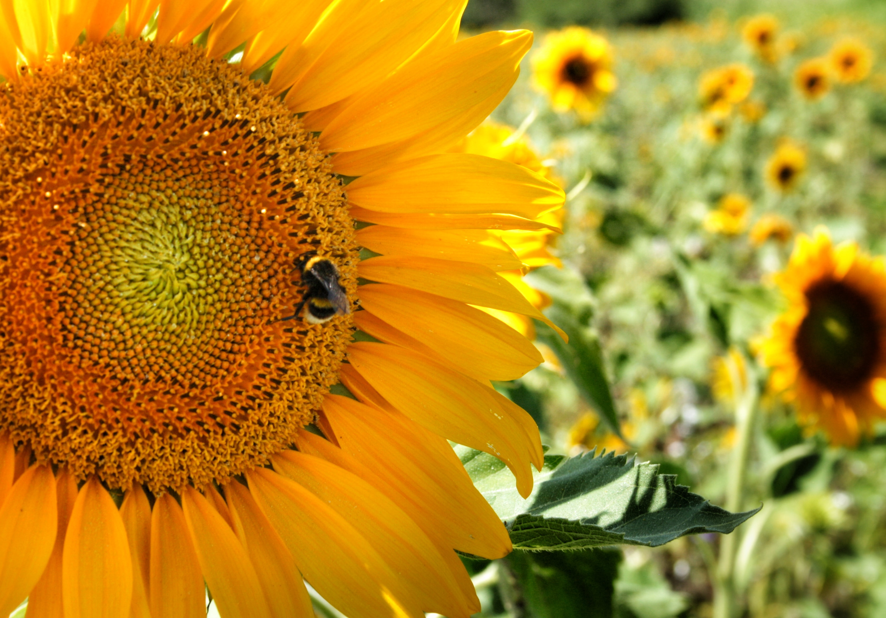

History of Sunflower
September 30, 2023, by Abigail Skepple

Sunflower was cultivated by American Indians in present-day Arizona and New Mexico about 3000 BC. Sunflowers are cultivated on almost every continent. Making Ukraine, Russia, European Union, Argentina, Turkey, and the U.S. the top producers,
with about 86% of the world’s total production. However, France, Romania, and China are the champions of seeds production yield per hectare.
The flower heads grow at the edge of branches, and their size may vary between 7.5-15 cm (3-6 in). A single head can produce 350 to 2,000 seeds.
A sunflower usually completes its life cycle approximately 90 to 125 days after planting.
What are Some Benefits and Uses of Sunflower
October 1, 2023, by Abigail Skepple

Sunflower seeds are high in protein, rich in healthy fats and contains antioxidants that can lower your risk of developing serious conditions.
It is an excellent source of: Vitamin E, Vitamin B1, Vitamin B6, Iron, Copper, Selenium, Manganese, Zinc, Potassium.
It can lower your risk of developing diseases such as high blood pressure or heart disease. Sunflower seeds contain vitamin E, flavonoids, and
other plant compounds that can reduce inflammation. It is also rich in ‘healthy’ fats, that can lower cardiovascular disease, high cholesterol,
and high blood pressure. It helps to boost your energy levels, especially with other nutrients like vitamin B and selenium.